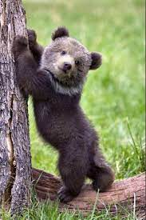

OSO Griszzly
Nombre cientifico:
Ursus arctos horribilis

Tienen garras largas y menos curvas que las del oso negro, idóneas para excavar plantas y roedores. Y con un hocico más sensible que el de un sabueso, los grizzly pueden detectar
comida a kilómetros de distancia,Su joroba característica es una gran masa muscular que les aporta más fuerza cuando cavan.
suelen ser solitarios, viven y cazan solos, con la excepción de las parejas de apareamiento y las hembras con cachorros.
- habita en bosques densos, tundra ártica y regiones montañosas subalpinas.
- Sus orejas son pequeñas y redondeadas.
- Conforme van creciendo se les desarrolla una joroba: se trata de un rasgo útil para diferenciarlo de otras especies de osos.
- Su tamaño es de aproximadamente 2 metros de altura.
- Son muy longevos y pueden llegar a vivir hasta 26 años de edad: las hembras viven más que los machos..

Pagina Principal